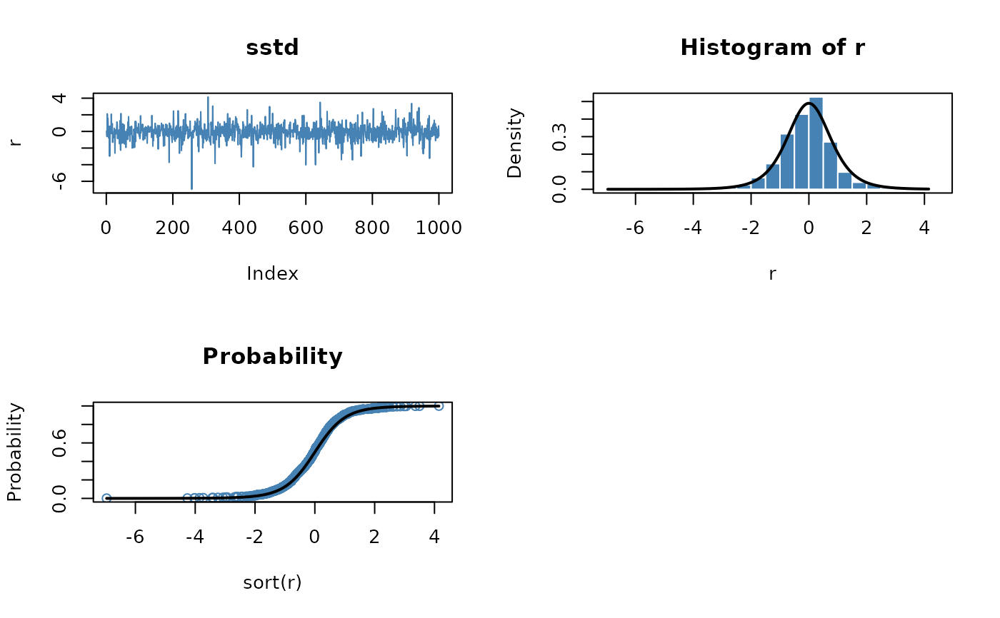

dist-std.RdFunctions to compute density, distribution function, quantile function and to generate random variates for the Student-t distribution.
dstd(x, mean = 0, sd = 1, nu = 5, log = FALSE)
pstd(q, mean = 0, sd = 1, nu = 5)
qstd(p, mean = 0, sd = 1, nu = 5)
rstd(n, mean = 0, sd = 1, nu = 5)location parameter mean,
scale parameter sd,
shape parameter nu.
the number of observations.
a numeric vector of probabilities.
a numeric vector of quantiles.
a logical; if TRUE, densities are given as log densities.
d* returns the density,
p* returns the distribution function,
q* returns the quantile function, and
r* generates random deviates,
all values are numeric vectors.
Fernandez C., Steel M.F.J. (2000); On Bayesian Modelling of Fat Tails and Skewness, Preprint, 31 pages.
## std -
par(mfrow = c(2, 2))
set.seed(1953)
r = rstd(n = 1000)
plot(r, type = "l", main = "sstd", col = "steelblue")
# Plot empirical density and compare with true density:
hist(r, n = 25, probability = TRUE, border = "white", col = "steelblue")
box()
x = seq(min(r), max(r), length = 201)
lines(x, dstd(x), lwd = 2)
# Plot df and compare with true df:
plot(sort(r), (1:1000/1000), main = "Probability", col = "steelblue",
ylab = "Probability")
lines(x, pstd(x), lwd = 2)
# Compute quantiles:
round(qstd(pstd(q = seq(-1, 5, by = 1))), digits = 6)
#> [1] -1 0 1 2 3 4 5
